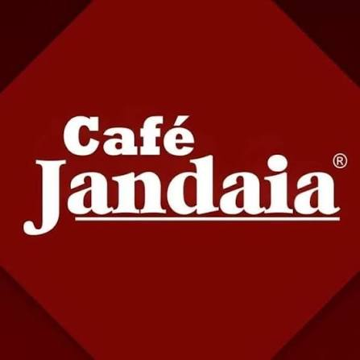
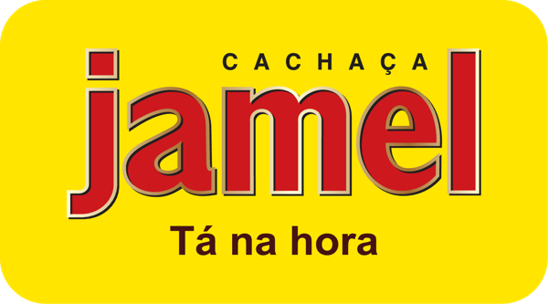

Catálogo de lotes
Leilão Especial Fim de Ano – Gado de Corte – Guaraniaçu · Guaraniaçu - PR · Domingo, 22/11, às 14h30
Ao vivo
Como chegar
Compartilhar
Fale conosco
Lotes
Ordem de entrada
Carregando lotes…
Apoio

